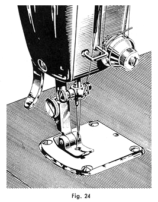

|
GEBRAUCHSANWEISUNG FÜR
DIE ELEKTRISCHE KOFFERNÄHMASCHINE FREIA Teil Vier |
Mewa Freia Instruction Manual Part Four |
| Anwendung der Nähfüße | Using the Presser Feet | |
| Die
verschiedenen auswechselbaren Nähfüße ermöglichen die
Ausführung einer Reihe von Spezialarbeiten.
Nach Lösen der Schraube 40 kann jeder gewählte Nähfuß auf die Fußstange 38 geschoben werden. Man überzeuge sich, ob er gut sitzt und ziehe die Schraube mit dem Schraubenzieher an. Die mit einem * versehenen Nähfüße werden als Normalzubehör jeder Maschine beigegeben. Alle anderen Sonderzubehörteile werden nur auf Wunsch gegen Berechnung geliefert. |
The various presser feet are used for a wide range of specialized sewing. By loosening screw 40 attach
any of the presser feet on the presser foot bar 38. Make sure it is on
there firmly and tighten the screw with a screwdriver. Those with * (an
asterisk) are included as a standard attachment with the machine. All
others can be purchased separately. |
|
| Der normale Nähfuß* | The Normal Presser Foot * | |
| wird bei sämtlichen glatten Näharbeiten angewandt. | is used for various flat sewing applications. |
| Der bewegliche Nähfuß | The Hinged Presser Foot | |
| wird bei glatten, besonders aber bei ungleich dicken Näharbeiten angewandt, z. B. wenn häufig Übergänge zwischen verschieden starken Stofflagen genäht werden müssen. | is for sewing on uneven thicknesses or across thick intersections. |

| Der Säumer* | The Hemmer * | |
| dient
zum Nähen einfacher Saumnähte.
Am Anfang des Saumes den Stoff etwa 5 mm breit umlegen und in die Schnecke des Säumers einführen. Man achte darauf, daß der Stoff gleichmäßig breit in die Schnecke hineingleitet. Zweckmäßige Stichlänge: 2,5 mm. |
for sewing simple hems. At the beginning of the hem fold the fabric about 5 mm over and insert into the hemmer. Make sure the fabric feeds evenly into the hemmer. Best stitch length: 2,5 mm. |
| Der Kapper* | The Feller * | |
| dient
zur sauberen Verbindung zweier Stoffteile durch Kappnaht.
Die Stoffteile so aufeinanderlegen, daß das untere Stück etwa 4 mm vorsteht. Die vorstehende Kante am Anfang einige Zentimeter umfalzen und über die halbe Schnecke des Kappers laufen lassen. Den Stoff auseinanderlegen, Naht ausstreichen und die Kante, die sich gebildet hat, noch einmal hochstehend durch den Kapper laufen lassen, um sie niederzunähen. Zweckmäßige Stichlänge 2,5 mm. |
is for making finished seams on two pieces of fabric. Lay the two pieces of fabric so that the bottom piece is about 4 mm further to the right. Stitch the two pieces together, using the projecting part of the foot as a guide. Open the work so the edge will stand up. Insert the edge into the foot and stitch down flat. Best stitch length: 2,5 mm. |
| Der Kantenfuß mit verstellbar. Wattierbügel | The Quilter | |
| zum
Nähen von Parallelnähten, z.B.Pikieren, Wattieren
Zunächst eine gerade Steppnaht ausführen. Den Bügel 53 auf den gewünschten Nahtabstand einstellen und mit der Schraube 54 festklemmen. Beim Nähen den Stoff so führen, daß die vorhergehende Naht am Bügel entlanggleitet. |
for sewing parallel stitches, quilting. First start with a straight row of stitching. The rod 53 can be moved to the desired distance and tightened with screw 54. Use the guide to follow the previous row of stitches. |
| Vorbereitungen zum Stopfen | Preparing to Darn | |
| Stichstellhebel in Mittelstellung bringen und Anschlagschraube hineindrehen (siehe Seite 13). Obere Fadenspannung etwas verringern (siehe Seite 14). Die Stopfplatte 55 gemäß Figur 28 in die Stichplatte einhängen und fest aufdrücken. Nähfuß gegen Stopffuß 56 auswechseln. Dabei ist daraug zu achten, daß die Steuerstange 57 des Stopffußes hinter dem Nadelhalter 35 steht. Nach richtigem Einsetzen des stopffußes muß sich seine Druckfläche bei Hochstellung der Nadel heben. | Put the stitch adjustment lever in the middle position and tighten the stitch adjustment screw (see page 13). Slightly decrease the upper tension (see page 14). Place the feed dog cover 55 over the throat plate as in Fig. 28 and press into place. Attach the darning foot 56. The bar 57 on the darning foot must be behind the needle clamp 35. When the foot is correctly attached the upwards movement of the needle will lift the foot. |
| Stopfen | Darning | |
| Faden
heraufholen (siehe Seite 11), Ober-und Unterfaden nach hinten legen, Stoff
auflegen, Stopffuß senken. Maschine in Gang setzen, Stoff under der
Nadel hin- und herbewegen.
Strümpfe über den Freiarm stülpen, mit den Fingern darüber spannen und gleichmäßig vor- und rückwärts, dann seitlich hin- und herschieben. Beim Sticken und bei großen Flickstellen ist die Verwendung eines Stickrahmens zum Einspannen des Stoffes zu empfehlen. |
Bring up the lower thread (see page 11). Place both threads back under the presser foot, place fabric under the foot and lower the foot. Begin sewing and move the fabric under the needle back and forth. For stockings place them over the freearm and using your fingers evenly stretch the material while sewing back, forth and side to side. For heavy knitted or large holes it is best to use a frame or embroidery hoop. |
| Das Lineal | The Seam Guide | |
| Zum
Nähen von Nähten mit gleichem Randabstand. Mit der Schraube 28
das Lineal 59 im gewünschten Abstand von dem Nähfuß auf
der Stichplatte festschrauben. Den Stoff daran entlangführen. |
Attach the seam guide 59 with the screw 58 to the throat plate at the desired distance from the foot. Run the edge of the fabric along the guide while sewing. |
Teil Eins | Teil Zwei | Teil Drei | Teil FünfZurück zum Inhalt |